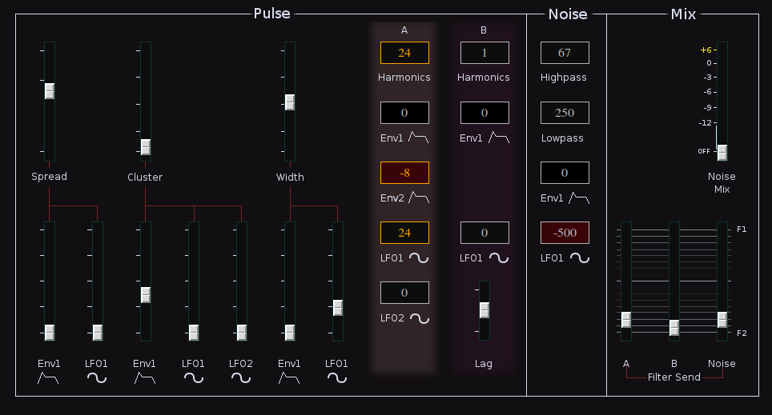
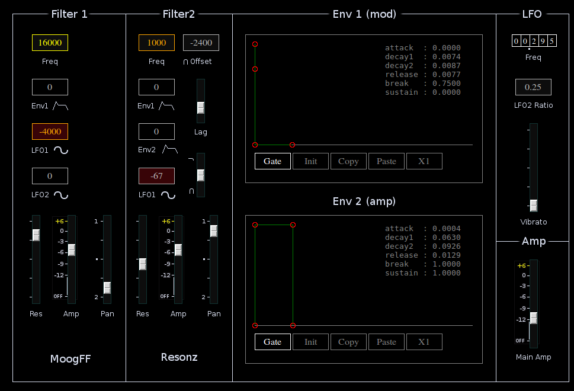

KLSTR2
 Previous( Klstr )
Next( M )
Home
Contents
Synth Catalog
Previous( Klstr )
Next( M )
Home
Contents
Synth Catalog
klstr2 is a variation on Klstr. Like Klstr, Klstr2 uses a battery of 6 pulse waves. The waves are divided into two groups "A" and "B". The first two signals in each group use the SuperCollider Blip UGen. The remaining signals are variable width pulse waves.
The two pulse signals are combined with filtered noise and then processed through one of two filter paths. Filter1 is a simulated Moog lowpass filter. Filter2 is a combined Resonz and Band Pass filter. For control Klstr2 has two linked LFOS and two ADDSR envelopes.
 The Pulse section controls source signal parameters.- Spread - Tuning. At the lowest setting the signals are unison. Tick marks indicate where more or less harmonic tones are created.
- Spread Env1 - Amount of Envelope 1 applied to Spread.
- Spread LFO1 - Amount of LFO1 applied to spread.
- Cluster - Sets relative mix between component waves. The cluster control is non-linear, as the slider is moved various pulses fade in and out.
- Cluster Env1 - Amount of Envelope 1 applied to Cluster.
- Cluster LFO1 and LFO2 - Amounts of LFO applied to Cluster.
- Width - Pulse width of (non blip) signals.
- Width Env1 - Amount of Envelope 1 applied to pulse width.
- Width LFO1 - Amount of LFO1 applied to Pulse Width.
- A - Harmonic content of Blip A.
- A Env1, Env2, LFO1, LFO2 - Amount of control signal applied to tone A harmonic count. May be negative.
- B - Harmonic content of Blip B.
- B Env1 LFO1 - Amount of control signal applied to B Harmonic count.
- B Lag - Lag time applied to Tone B control signals.
Noise section contains a White Noise source processed through two simple filters. The Highpass filter is static. The Lowpass filter may be modulated by either Env1 or LFO1.
The MIX section controls Noise amplitude and the amount of each source (Tone A, Tone B and Noise) sent to each filter.
Filter 1 is a simulated Moog Lowpass filter. it may be modulated by Env1, LFO1 or LFO2. The pan control selects which of the two outputs the filter signal appears on.
Filter 2 is actually two filters in parallel: A Resonz and Band Pass. These two filters are modulated in tandem though their frequencies may be offset from each other. The lag control is applied to the Band Pass only. The slider below Lag selects relative mix between the two filters.
The two envelopes have ADDSR form. Env1 is for modulation. Env2 is the primary output envelope, though it may be used as a modulator in selected areas.
The two LFOS are linked. The frequency of LFO2 is always some more or less simple ratio of LFO1. LFO2 is used both for modulation and vibrato.
Previous( Klstr ) Next( M ) Home Contents Synth Catalog